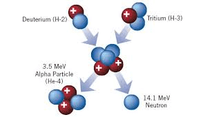

The weak nuclear force and why it's important
Benjamin Tang & Teddy Rosenthal 8/8/2020
Since the dawn of time, our universe has been governed by four fundamental forces that help physicists explain the universe. The first of these forces to be discovered, and the weakest, is gravity. Gravity is known by most as a force that pulls light objects towards heavy objects. Since it was first theorized by Isaac Newton in 1687, its principle has been further developed through quantum mechanics, and Albert Einstein’s theory of general relativity.
The second weakest force, electromagnetism, is the force that governs the interactions of charged particles and magnetic fields. It is carried by the photon, and it is responsible for attractive and repulsive forces in charged atoms, chemical reactions, and other phenomena related to energy.
The strong nuclear force is the force that binds quarks together using gluon energy and binds protons to neutrons. It explains why the mass of an atom's nucleus is slightly smaller than the mass of its protons and neutrons combined, as some of the mass of the subatomic particles is converted into binding energy, as proven by the theory of special relativity.
Finally, there is the weak nuclear force, which acts on subatomic levels and went undiscovered until 1983. You might be wondering what the purpose of this force is and why it is fundamental to our understanding of the universe.
(Socratic)
The origins of the weak nuclear force dates back to 1933 when physicist Enrico Fermi explained beta decay as an event that was governed by a weak interaction, which was responsible for turning a neutron into a proton, a beta particle (electron), and a neutrino. Fermi concluded that this process was caused by an adhesive force that required two particles to be touching in order to take action. It was later proven, however, that this explanation was false, as a team from Georgia State University found that it was a cohesive force that acted at an extremely short range (8.7e-19 meters).

(Live Science, American Nuclear Society)
(Live Science, American Nuclear Society)
Like the electromagnetic force carried by photons, and the strong nuclear force being carried by gluons, the weak nuclear force is carried by the W and Z bosons. It is believed that the W boson is responsible for being able to change the flavor of a quark (an example being an up quark changing to a down quark). This allows the neutron to be changed into a proton (or vice versa) in processes like beta decay and nuclear fusion, due to the W boson being found with both positive and negative charges. The Z boson, on the other hand, is difficult to observe, as scientists have trouble detecting its interactions with other particles. Many studies involving the Z boson are inconclusive.
(The Open University)
The weak nuclear force is very important to our understanding of the universe. This is seen through its presence in experiments, and natural processes like beta decay and nuclear fusion. It has shaped our world through its force-carrying particles and its role in nuclear chemistry. The W boson’s role in nuclear fusion is what makes stars burn, and causes stars to form heavier elements, many of which are essential to life on Earth. Famous physicist David Armstrong once said, "If the weak interaction were significantly stronger than it is, then the sun would have burned out years ago." In conclusion, the weak nuclear force is essential to physicists in their conquest to study the nature of the universe.

Ben is a rising sophomore at Westlake High School in California. Through WiCode, he aims to cultivate an interest in STEM among youth. He works to share his love of computer science and programming to the community. He also enjoys participating in different academic competitions in math and computer science. Outside of STEM, he is an avid oboist and swimmer.
Teddy is a rising sophomore at Westlake High School who enjoys learning about math and science related topics. Through InterSTEM, Teddy's goal is to spread knowledge of the most interesting STEM topics in hopes to popularize science. He also enjoys music, wrestling, and hiking.